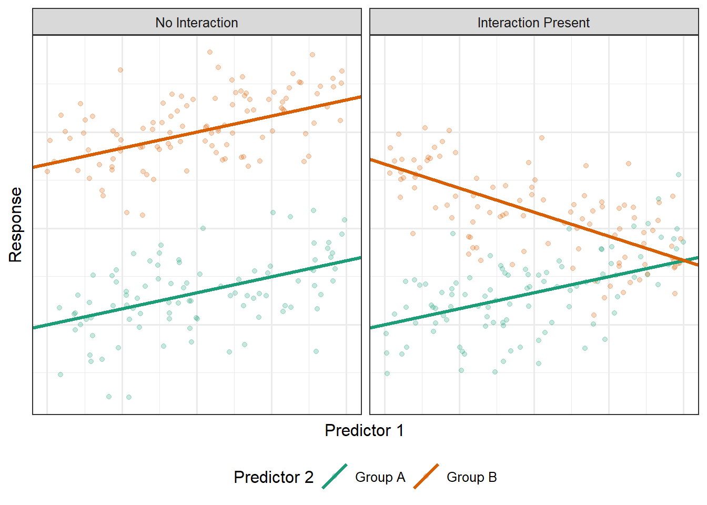

9 Allowing Effect Modification (Interaction Terms)
Chapter 4 outlined three broad uses for creating a multivariable model. Chapter 7 highlighted the benefit of isolating an effect. In this chapter, we discuss how to examine the interplay between two predictors. That is, we allow the effect of one predictor to be modified (or dependent upon) the value of another predictor. This is done through “interaction” terms in the model
Warning
“Interactions” are not about the relationship between predictors. Our goal is still to examine the relationship between the response and the predictor. An interaction allows that relationship to depend upon another predictor.
Consider a linear model which views the response as a function of two quantitative predictors and a categorical variable with only two groups; that is,
\[(\text{Response})_i = \beta_0 + \beta_1 (\text{Predictor 1})_i + \beta_2 (\text{Predictor 2})_i + \beta_3 (\text{Group B})_i + \varepsilon_i \tag{9.1}\]
where
\[ (\text{Group B})_i = \begin{cases} 1 & \text{if i-th participant belongs to Group B} \\ 0 & \text{if i-th participant belongs to Group A.} \end{cases} \]
This model says there is a single effect of the second predictor on the response; that is, the effect of Predictor 2 is the same for participants in Group A as it is for those in Group B. What if we believe the effect is of Predictor 2 differs in the two groups? A naive approach would be to consider two separate models:
\[ \begin{aligned} \text{Model 1 (Group A Only)}:& \quad (\text{Response})_i = \alpha_0 + \alpha_1 (\text{Predictor 1})_i + \alpha_2 (\text{Predictor 2})_i + \varepsilon_{1,i} \\ \text{Model 2 (Group B Only)}:& \quad (\text{Response})_i = \gamma_0 + \gamma_1 (\text{Predictor 1})_i + \gamma_2 (\text{Predictor 2})_i + \varepsilon_{2,i}. \end{aligned} \]
This creates some of the same problems we saw with creating multiple models in order to address categorical predictors (see Chapter 8). In particular,
- We obtain two estimates of residual variance, but neither estimate is using the full data.
- While we accomplished our goal of letting the effect of Predictor 2 differ in each group, we also allowed the effect of Predictor 1 to differ in each group. If we believe the effect of Predictor 1 is the same across the two groups, allowing it to be estimated separately in each group is inefficient.
- It makes it difficult to clearly conduct a hypothesis test to determine if there is evidence the effects are actually different; that is, it is harder to quantify the evidence that \(\alpha_2 \neq \gamma_2\).
We seek a modeling structure that allows the effect of the a predictor (Predictor 2 in the model above) to change for each value of the second predictor (the group structure in this case). That is, we would like to capture the possibility illustrated in Figure 9.1.
Consider the following model:
\[ \begin{aligned} (\text{Response})_i &= \beta_0 + \beta_1 (\text{Predictor 1})_i + \beta_2 (\text{Predictor 2})_i \\ &\qquad + \beta_3 (\text{Group B})_i + \beta_4 (\text{Predictor 2})_i (\text{Group B})_i + \varepsilon_i \end{aligned} \tag{9.2}\]
To motivate the development of this model, let’s return to Equation 9.1. Remember, our goal is to allow the effect of Predictor 2, captured by \(\beta_2\), to depend on the group to which the participant belongs. Imagine replacing \(\beta_2\) with
\[\beta_2 = \eta_0 + \eta_1 (\text{Group B})_i.\]
Notice that this says the effect \(\beta_2\) can depend on whether the participant is in Group B; if the participant is in Group A, then the indicator is 0 and \(\beta_2 = \eta_0\). If, on the other hand, the participant is in Group B, then the indicator is 1 and \(\beta_2 = \eta_0 + \eta_1\). Substituting this in, we have
\[ \begin{aligned} (\text{Response})_i &= \beta_0 + \beta_1 (\text{Predictor 1})_i + \left(\eta_0 + \eta_1 (\text{Group B})_i\right) (\text{Predictor 2})_i \\ &\qquad + \beta_3 (\text{Group B})_i + \varepsilon_i \\ &= \beta_0 + \beta_1 (\text{Predictor 1})_i + \eta_0 (\text{Predictor 2})_i \\ &\qquad + \eta_1 (\text{Predictor 2})_i (\text{Group B})_i + \beta_3 (\text{Group B})_i + \varepsilon_i. \end{aligned} \]
Recognizing that the choice of Greek letters \(\eta_0\) and \(\eta_1\) are arbitrary, we have the same model as in Equation 9.2.
Equation 9.2 adds another variable to the model that is the product of the second predictor and the group indicator. Let’s examine the structure that is provided here. Suppose we are interested in examining the mean response for subjects in Group A; the value of the group indicator is 0 for these subjects, leading to
\[E\left[\text{Response} \mid \text{Predictors, Group A}\right] = \beta_0 + \beta_1 (\text{Predictor 1}) + \beta_2 (\text{Predictor 2}).\]
For subjects in Group B, the value of group indicator is 1, leading to the mean response
\[E\left[\text{Response} \mid \text{Predictors, Group B}\right] = \left(\beta_0 + \beta_3\right) + \beta_1 (\text{Predictor 1}) + \left(\beta_2 + \beta_4\right) (\text{Predictor 2}).\]
This allows both the intercept and the slope associated with Predictor 2 to differ between the two groups. That is, it allows not only a “bump” for being in Group B to the mean response, but it also allows the effect of the second predictor to differ for the two groups.
Big Idea
In order to capture complex modeling structures, we embed those structures in a large model as opposed to fitting several smaller models in different subgroups of the population.
We prefer the strategy in Equation 9.2 to performing a subgroup analysis.
Definition 9.1 (Subgroup Analysis) Refers to repeating a specified analysis (e.g., regression model) within various levels of a categorical predictor.
- This will appropriately estimate the effect modification.
- This results in a loss of information because all parameters are forced to vary across the subgroups.
The new predictor added to our model in Equation 9.2 (the product term) is known as an interaction term.
Definition 9.2 (Interaction) An interaction term allows the effect of a predictor on the response to depend on the value of a second predictor (capturing an effect modification).
- The interaction term is created by adding the product of the two predictors under consideration to the model.
Note
While we have illustrated the use of interaction terms using a quantitative and categorical predictor, interactions can be used with any type of predictors. For example, we could have considered the product of Predictors 1 and 2 in Equation 9.1 if we had wanted to.
While we have illustrated the use of interaction terms in a linear model, this is a general modeling technique that can be extended to other forms of regression models.